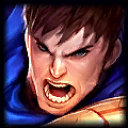

海克斯捉迷藏
HEXTECH SEEKERS
镜头跟随
Y
回到英雄
SPACE
操作说明
SUMMONER’S RIFT
召唤师峡谷
峡谷探索 · 对局规则预演
查看 · 红 Buff
RED BRAMBLEBACK
查看 · 龙坑河道
DRAGON RIVER
查看 · 蓝 Buff
BLUE SENTINEL
— FPS
盖伦
待命
鼠标右键
移动
左键拖动
镜头
滚轮
缩放
S
停止

1
DEMACIAN WARRIOR
盖伦
准备探索
A
S
␣
第一阶段
场景与操控
尚未进入正式对局
坐标 —
触屏轻点移动 · 拖动镜头
进入峡谷
正在读取场景与英雄…
SUMMONER’S RIFT · EXPLORATION
重新加载
探索召唤师峡谷
鼠标右键
移动盖伦，自动绕开岩壁
S
停止移动
左键拖动
自由移动镜头
滚轮
放大或缩小视野
Y / 空格
切换镜头跟随 / 回到盖伦
A
预览原始攻击动作，无伤害
小地图 / 地点
查看地图位置，不移动英雄
当前交付用于确认峡谷画面、英雄比例和操作手感。地图下半区可移动；抓捕、战争迷雾、野怪实体、AI、技能和海克斯尚未接入。攻击按钮只播放动作。